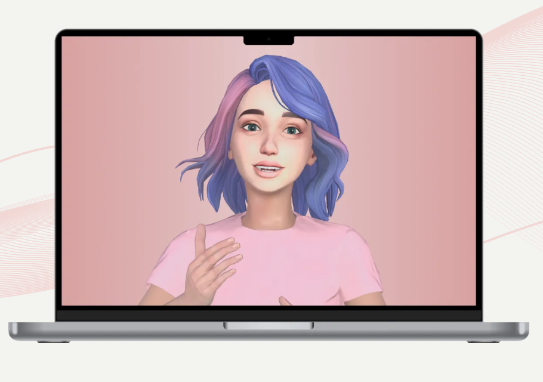
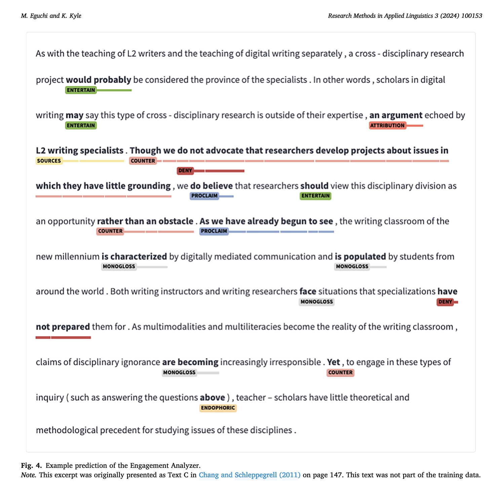
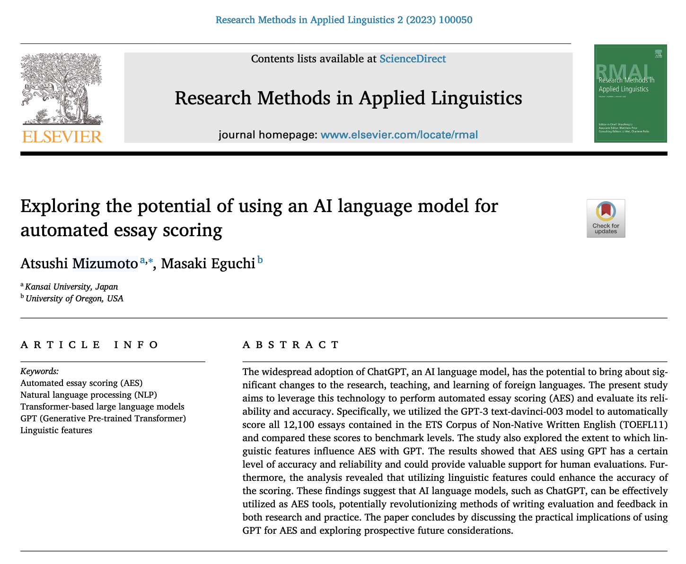
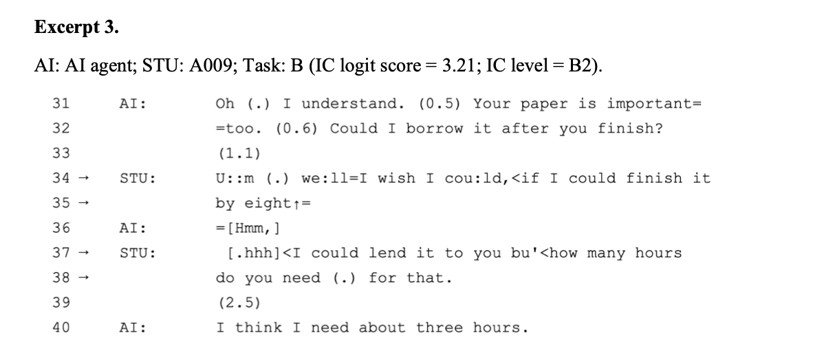
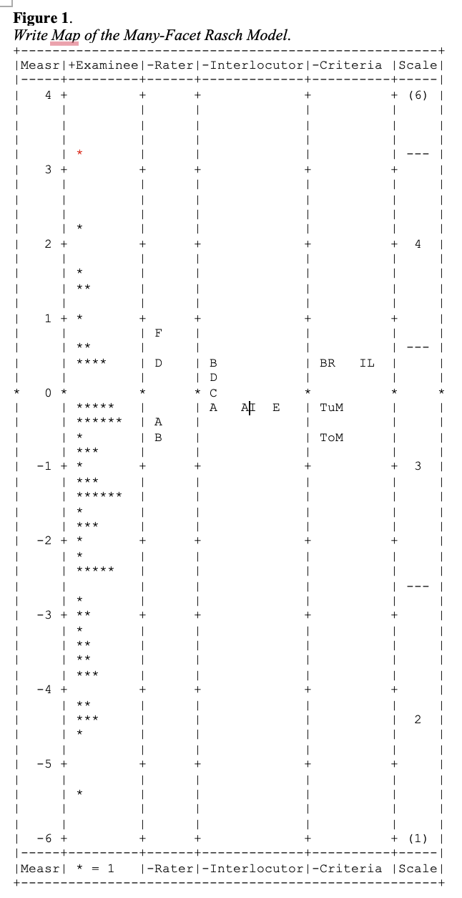
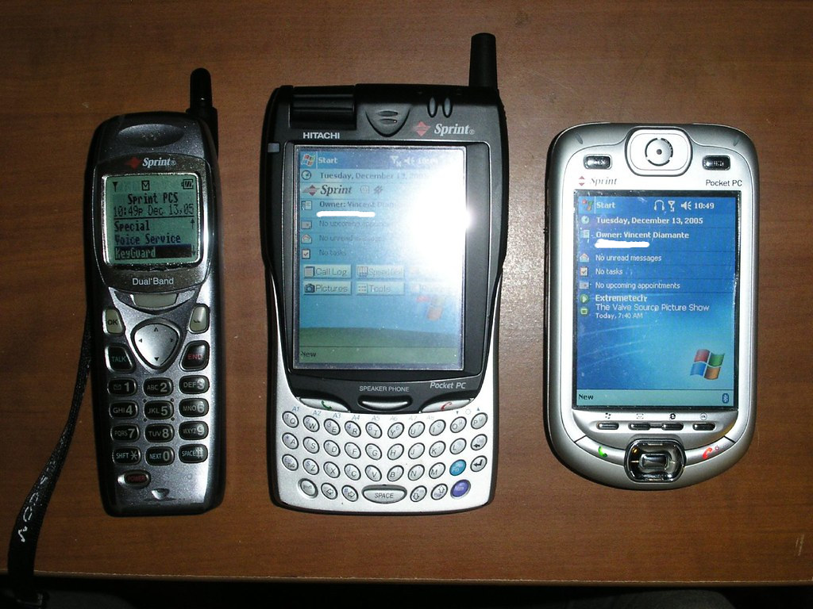
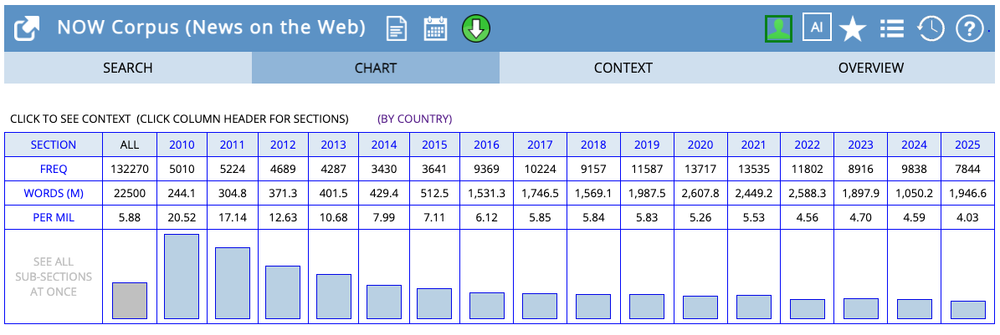
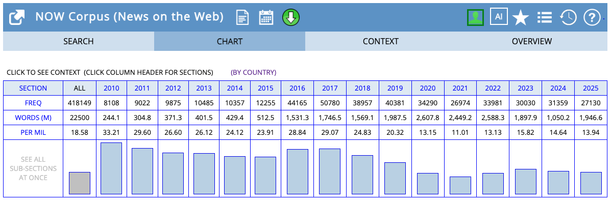
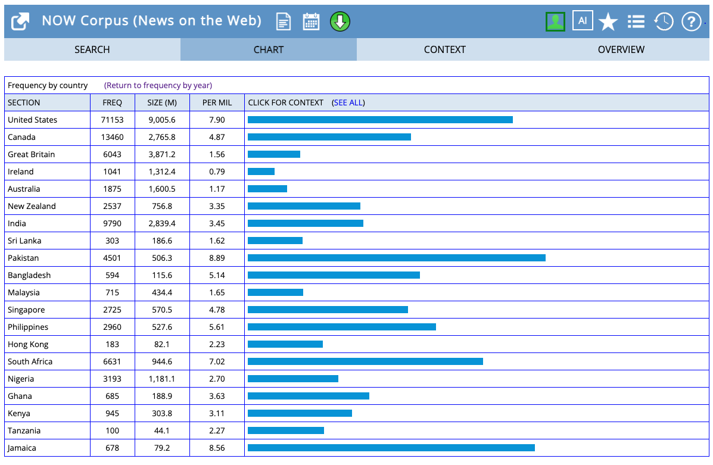
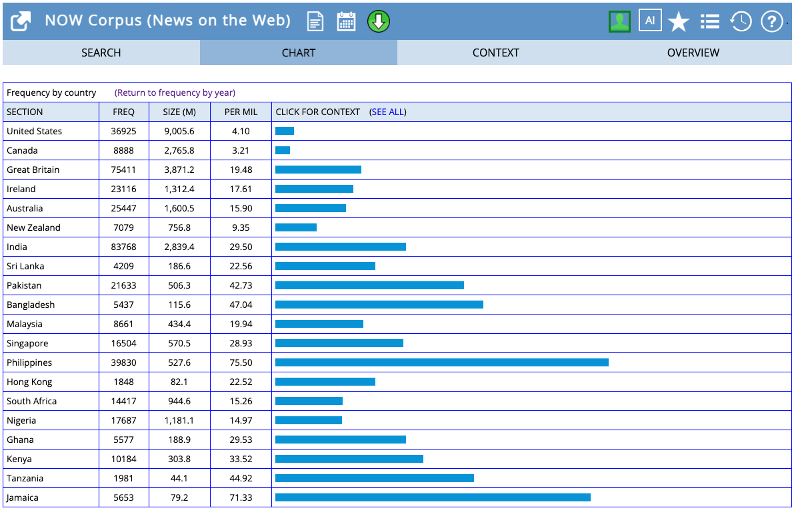

Session 1: Introduction
Welcome to Linguistic Data Analysis I
Today’s agenda
Session 1 Agenda
- Welcome & Course Logistics
- Course website & Google Classroom access
- Introduction to Corpus Linguistics
- What is a corpus?
- Types of linguistic corpora
- Typical research use cases
Session 1 Agenda
- Course Roadmap
- Objectives & learning outcomes
- Course structure and expectations
Learning Objectives
By the end of this session, students will be able to:
- Define what a corpus is and distinguish between types of corpora.
- Describe key use cases of corpus linguistics in applied linguistics.
- Understand the course objectives, structure, and expectations.
Your Instructor
Masaki Eguchi, Ph.D.
- Developing AI (InteLLA) and Speaking test at Equmenopolis, Inc.
- Guest Research Assistant Professor at Waseda University.

My research
Second-language writing/speaking assessment using computational techniques


Recent work - Validating AI speaking test


Introduction 1st round
- Briefly introduce yourself
- Name
- Year/Department
- Things you like to do during free time, OR
- Favorite things to do in Sendai.
Introduction 2nd round
- Research interests/topic
- Why you are taking this course
What is a corpus
What is the first thing that come to your mind about corpus?
A linguistic Corpus
A linguistic corpus is:
- searchable digital collection of
- real-world language use
- often accompanied by meta-data describing the contextual parameters
(To be explored more in session 2)
Corpus documents language use in real-world

COCA example
What do corpora contain?
- language samples produced in the wild for specific communicative purposes
- Written language:
- Magazines
- News Paper
- Blog
- Spoken language:
- transcriptions of spoken exchanges
- TV or radio shows
- Conversations
- transcriptions of spoken exchanges
- Written language:
How do we use corpus?
Corpus can give you answers on how people use language.
- How often does X occur in Corpus A?
- How often does X occure with Y?
- In what context does X occur?
Word Naming time. What is the following object?

- cell phone
- mobile phone
- smart phone
Research questions about
Open-ended question
- How does the frequency of
cell phonechanged over time? - Which region uses
cell phonemore frequently thanmobile phone?
Close-end deductive question
- Does British use
cell phonemore often thanmobile phone?
Set up English-Corpora.org account
- Visit English-Corpora.org
how many times does cell phone occur in News written in English?
cell-phone
how many times does mobile phone occur in News written in English?
mobile-phone
Comparision
Which region uses cell phone more frequenty?
cell-phone
How about mobile phone?
mobile-phone
Answer to the research questions
- How does the frequency of
cell phonechanged over time?- The use of cell phone tends to decline.
- Which region uses
cell phonemore frequently than others?- cell phone: US; Pakistan; Jamaica
- mobile phone: Philippines;
→ You can get quantitative insights into how certain language is used
Research Questions for corpus-based research
With corpus we can ask questions:
- How does X change over TIME?
- How does X differ by REGION?
- How does X vary by GENRE?
We can learn patterns of language use in relation to extra-linguistic factors.
The X in corpus linguistics
In corpus linguistics, we not only identify words but also:
- Morphemes (e.g., -ness; pre-; -ed)
- Syntactic constructions (e.g., by
AGENT; relativa clauses) - Multiword sequences (e.g., collocation significant role)
- Pronunciation (segmental; prosodic features)
→ In this course, we focus on lexico-grammatical features
Questions?
Course Syllabus and Logistics
Course Website
We will use the following two channels
- Github Page
- to communicate course schedules, plans, and slides.
- Google classroom
- Please do not hesitate to reach out
- for assignment submission and Readings and Corpus data distribution.
Course description
This 5-day introduction:
covers key concepts in corpus linguistics and learner corpus research
teaches you how to conduct simple corpus searches using Concordance software
gives you an overview of methods to investigate conditional distributions (e.g., frequency, co-occurrences) of vocabulary, multiword units, and grammatical items.
introduces foundational methods to identify linguisitic phenomena using corpus and how to know about their distribution
discusses important applications of corpus methods in applied linguistic (second language) research
Learning Objectives
By the end of this course, students will be able to:
- Explain what corpus linguistics is and how corpus linguistics can help learn linguistic phenomena
- Search for and select available corpora relevant to their own research
- Discuss design issues related to language corpora for specific research purposes
- Apply introductory corpus linguistic analyses (e.g., frequency analysis, concordancing, collocation analysis, POS tagging, and dependency parsing) to preprocessed corpora
- Evaluate the benefits and drawbacks of a corpus linguistic approach to linguistic analysis
Course Components
- Lectures and tutorials
- Daily Hands-on activities
- Mini-corpus labs
- Final project (will talk more)
Textbook
Durrant, P. (2023). Corpus linguistics for writing development: A guide for research. Routledge. https://doi.org/10.4324/9781003152682
Stefanowitsch, A. (2020). Corpus linguistics: A guide to the methodology. Zenodo. https://doi.org/10.5281/ZENODO.3735822 (This is an open source textbook, so it’s freely available online)
Other required/Optional readings are provided through Google Classroom.
Tools and Softwares
- Simple Text Analyzer: A web app created for you.
- AntConc: Corpus analysis toolkit for Concordancing
- Please set this up by tomorrow set-up guide
- TagAnt:
- Download and get ready to open
- Google Colaboratory: Follow the instruction here to enable the tool.
Session overview
| Day | Theme | Sessions |
|---|---|---|
| Day 1 | Introduction & Corpus Basics | Session 1-3 |
| Day 2 | Analysis of Vocabulary & Multiword Units (1) | Session 4-6 |
| Day 3 | Analysis of Vocabulary & Multiword Units (2) | Session 7-9 |
| Day 4 | Analysis of Grammar | Session 10-12 |
| Day 5 | Advanced Topics & Projects | Session 13-15 |
Day 1 Today
- Basic corpus search
- Constructing Research Questions and hypotheses
sofa - chart
Day 2 (Monday)
- Creating word frequency list
- Calculating lexical diversity measures
- Calculating lexical sophistication measures
freq-distribution
Day 3 (Tuesday)
- Identifying multiword units (ngrams and collocations)
- Calculating Strengths of Association Measures
collocation
Day 4 (Wednesday)
- Conducting POS tagging and dependency parsing
- We will learn how to parse sentence using spaCy package in Python
dependency
Day 5 (Thursday)
- Special session on linguistic annotation using Large-Language Models
- linguistic accuracy
- discourse move (if time allowed)
Daily schedule
| Time | Activity |
|---|---|
| 10:30-12:00 | Session 1 |
| 12:00-13:00 | Lunch break |
| 13:00-14:30 | Session 2 |
| 14:30-14:40 | Break |
| 14:40-16:10 | Session 3 |
| 16:15-17:00 | Office hour |
Final presentation
Option A - Conducting a separate mini-project
- Option A is more extensive in that you will be asked to conduct a new mini-project using the toolkit you have learned throughout the course.
- Given the limited time, however, this plan requires a lot of commitment to the present course and may not be feasible, (but we can try if you’d like!).
- We will discuss possible alternatives (like Option B below)
Option B - Revisiting one of the completed Corpus Lab assignments
- As this 5-day intensive course teaches you a lot of new techniques and approaches to analyze lingusitic data, it is important for us to revisit the already completed assignments and consolidate our skills.
- In Option B, you will be asked to make a presentation on one of your previously completed Corpus Lab assignments, clearly articulating the thinking process as well as potential extension of your approach.
- More details will be provided on the first day of the course.
What We’ve Covered So Far
- Corpora = searchable digital collection of real-world language use
- We can ask questions about patterns
- Corpus gives us evidence-based answers
Assignment 1 Preview
By the end of today, you’ll be able to:
- Ask your own research question
- Search corpus to find relevant results
- Interpret what you find
- Write up your discoveries
Start thinking: Are there any English expression or construction you want to learn more?
Time to set-up the tools!
- AntConc: Corpus analysis toolkit for Concordancing
- Please set this up by tomorrow set-up guide
- TagAnt:
- Download and get ready to open
- Google Colaboratory: Follow the instruction here to enable the tool.
Linguistic Data Analysis I